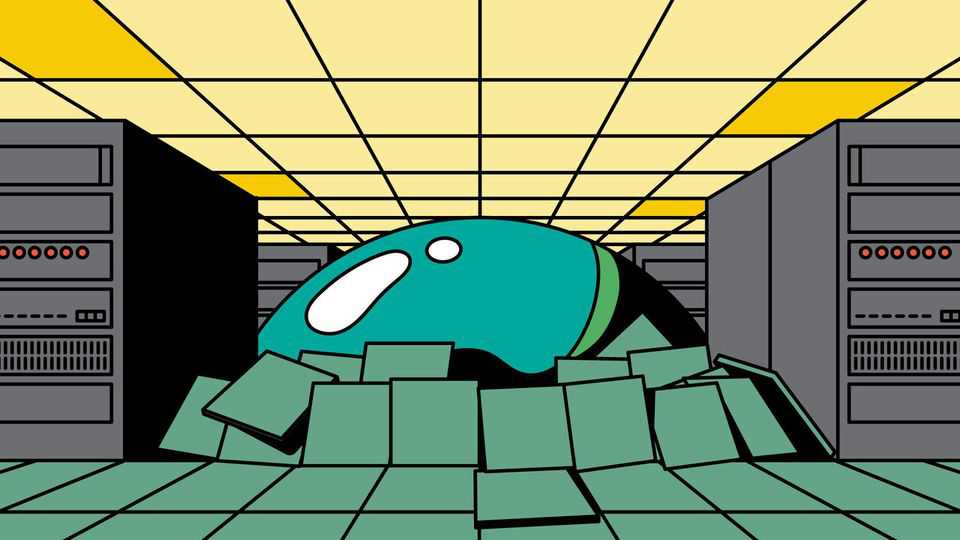
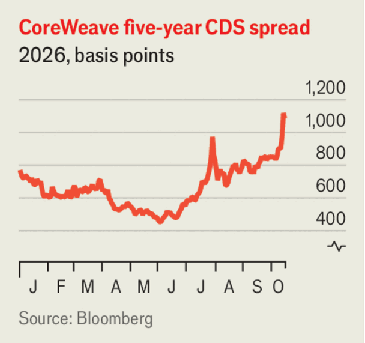

Either AI or public debt could crash markets. But probably not both
If AI stocks collapse, bond yields will fall

Oct 22nd 2026
Two SPECTRES stalk financial markets. One is the fear that surging bond yields will make the rich world’s shaky public finances unsustainable, triggering a nasty fiscal crisis. The other is the worry that the revenues from artificial intelligence needed to keep the data-centre boom going will fail to arrive. As we report, that would devastate credit markets and cause a big fall in stocks, too.
The good news is that only an Ichabod Crane would think that both these scenarios could strike at once. Instead, investors must decide which story is scarier. For now, The Economist is more worried about sovereign debt.
For most of the year, concerns about governments have dominated. Between the end of February and the start of October, the yield on 30-year US Treasuries rose by a full percentage point. The Iran war has sent inflation up and forced central banks to raise interest rates. Strong economic growth and the rush to build data centres have caused a scramble for capital in which governments have had to compete with the private sector. In Japan, Britain and especially France, investors have fretted about the ability of governments to service their debts.
In recent weeks, though, the prospect of an end to the AI boom has scared the markets more. The five-year bonds of CoreWeave, a “neocloud” that rents out data centres, trade at a 15% yield, up from 10% in July. The company’s share price has fallen by about a third in the past month. The slowing revenue growth of Anthropic, an AI-model provider, has investors worried that the cash CoreWeave and its peers need may not arrive, or at least not quickly enough to pay their creditors. Interlinked financing means that pain could spread quickly, through both the ai supply chain and the private-credit and insurance firms that hold a lot of data-centre debt.

As a result, many sovereign bonds have rallied. There has been little relief for France, where riots are worsening a political crisis, or Britain, where an upcoming budget makes investors nervous. But yields on ten-year Treasuries are down by a fifth of a point. Investors usually flee to the safety of American bonds in a downturn. Everywhere else, as data-centre investment slowed, an AI crash would ease the scramble for capital. And it would lead central banks to lower interest rates to support growth, thereby making debts easier to service.
Only in a big crash akin to the global financial crisis (GFC) of 2007-09 would the two risks collide. Governments are already sufficiently in the red that a deep recession would, by collapsing tax revenues and increasing welfare spending, make budget deficits look truly terrifying. Long-term bond yields might rise even as short-term interest rates fell—a nasty symptom of fiscal malaise that sometimes strikes emerging markets. It did not happen during the GFC, but the starting-point for debt and deficits today is higher.
Thankfully, there is no reason to expect such a deep crash. True, the history of finance shows that useful new technologies often bring about a boom and bust, and the web of financing behind AI has become complex. But the industry’s interlinkages are better understood than the alphabet-soup of housing-market securities was in 2007. Banks are safer, too. Though they are exposed to ai via their lending to private-credit firms, their balance-sheets are less fragile and better monitored. And backstopping much of the industry is the chipmaker Nvidia, which has an enormous cash pile. Most important, AI assets, though a big slice of many stock indices, are a smaller chunk of household wealth than housing.
So the best comparison for today’s AI vulnerabilities remains the dotcom bubble of the late 1990s. When it burst in 2000, cratering stocks caused only a mild recession. Bond yields came down, too, and underlying productivity growth held up. Such a scenario would hardly solve governments’ long-term budget problems, but it might forestall them. Many economies outside America are less exposed to the AI boom than they are to bond yields; growth falling by less than interest rates would make legacy debts a lighter burden. America’s deficit would grow in a recession, but so would the world’s appetite for Treasuries, because the dollar is the world’s reserve currency.
By contrast, if high interest rates triggered a sovereign-debt blow-up the consequences would be truly grave. If investors lost confidence in Treasuries, it would threaten the dollar’s valuable status as a haven. As France is discovering, trying to close big deficits under duress can lead to political instability. Governments may prefer to inflate away debt than to pay it down. That could imperil the stability on which all investment depends. A run on sovereign debt in a big advanced economy could well leave investors wishing that a dotcom-style ai bust was all they had to worry about. ■